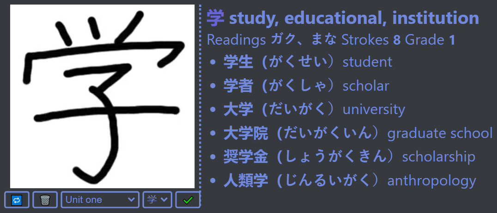

The following is a basic guide to the layout of the extension interface

The image to the left depicts the main layout of the popup. On the left, a video drawing guide is shown with a control panel underneath. The control panel
can be used to pause/play/rewind the drawing video, select a new set to learn kanji from, or select a new kanji from the selected set to learn. Using the
mouse, the character displayed can be traced and the drawing can be given a score based on how close the drawing is. This can be done by clicking the green
tick button.
The right side shows the character translation and the two different types of readings for each character, the 音読み and the 訓読み. The difficulty and grade are also shown, along with several example words containing the character.
The right side shows the character translation and the two different types of readings for each character, the 音読み and the 訓読み. The difficulty and grade are also shown, along with several example words containing the character.
The video guide shows the correct drawing of the kanji, and the video may be sped up or slowed down in the settings page. When drawing, if you make a mistake
and wish to undo a segment you've traced over, hold the
By default, the dropdown set menu contains kanji from Units 1-12 in the Japanese textbook Wakatta, plus a list of every prescribed kanji on the Japanese continuers HSC prescribed kanji list (Available here - page 66). These sets can be edited from the settings page. Arrow keys may be used to navigate the menus, the up and down arrows will increment and decrement the set, and the left and right arrows will adjust the selected kanji in the same manner.
Ctrl key and drag to erase. By default, the dropdown set menu contains kanji from Units 1-12 in the Japanese textbook Wakatta, plus a list of every prescribed kanji on the Japanese continuers HSC prescribed kanji list (Available here - page 66). These sets can be edited from the settings page. Arrow keys may be used to navigate the menus, the up and down arrows will increment and decrement the set, and the left and right arrows will adjust the selected kanji in the same manner.